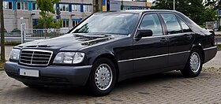

The Mercedes-Benz W140 is a series of flagship vehicles manufactured by Mercedes-Benz from 1991 to 1998 in sedan/saloon and coupe body styles and two wheelbase lengths (SE and SEL). Mercedes-Benz unveiled the W140 S-Class at Geneva International Motor Show in March 1991, with the sales starting in April 1991 and North American launch was on 6 August 1991.
